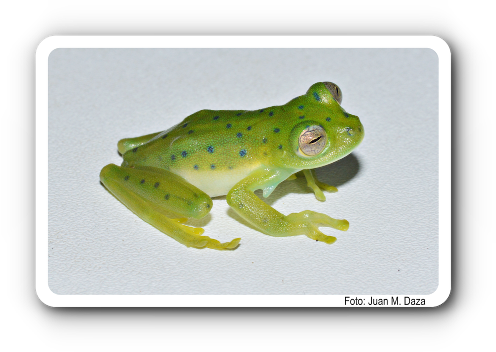
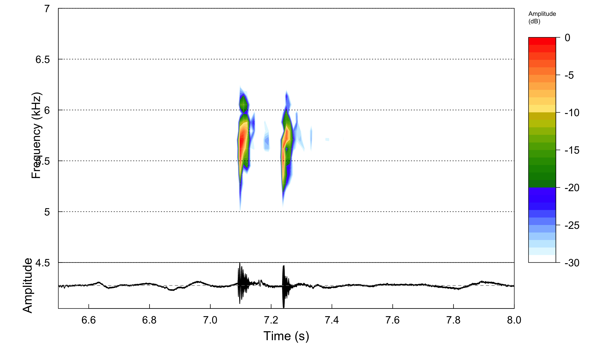

Centrolenidae
Espadarana prosoblepon
Señal Acústica

Distribución Geográfica de los Datos
Disponibilidad de Datos
| Etiqueta | Obs. | Audio | Tabla |
|---|---|---|---|
CSA-IAVHIAvH-CSA-34364 |
— | 🎵 | — |
CSA-IAVHIAvH-CSA-39357 |
— | 🎵 | 📄 |
CSA-IAVHIAvH-CSA-39358 |
— | 🎵 | 📄 |
CSA-IAVHIAvH-CSA-39359 |
— | 🎵 | 📄 |
CSA-IAVHIAvH-CSA-39409 |
— | 🎵 | 📄 |
CSA-IAVHIAvH-CSA-39410 |
— | 🎵 | 📄 |
CSA-IAVHIAvH-CSA-39411 |
— | 🎵 | 📄 |
CSA-IAVHIAvH-CSA-39412 |
— | 🎵 | 📄 |
CSA-IAVHIAvH-CSA-39413 |
— | 🎵 | 📄 |
CSA-IAVHIAvH-CSA-39414 |
— | 🎵 | 📄 |
CSA-IAVHIAvH-CSA-39415 |
— | 🎵 | 📄 |
CSA-IAVHIAvH-CSA-39416 |
— | 🎵 | 📄 |
CSA-IAVHIAvH-CSA-39417 |
— | 🎵 | 📄 |
CSA-IAVHIAvH-CSA-39418 |
— | 🎵 | 📄 |
CSA-IAVHIAvH-CSA-39419 |
— | 🎵 | 📄 |
CSA-IAVHIAvH-CSA-39420 |
— | 🎵 | 📄 |
CSA-IAVHIAvH-CSA-39421 |
— | 🎵 | 📄 |
CSA-IAVHIAvH-CSA-39422 |
— | 🎵 | 📄 |
CSA-IAVHIAvH-CSA-39423 |
— | 🎵 | 📄 |
CSA-IAVHIAvH-CSA-39424 |
— | 🎵 | 📄 |
CSA-IAVHIAvH-CSA-39425 |
— | 🎵 | 📄 |
CSA-IAVHIAvH-CSA-39426 |
— | 🎵 | 📄 |
CSA-IAVHIAvH-CSA-39427 |
— | 🎵 | 📄 |
CSA-IAVHIAvH-CSA-39428 |
— | 🎵 | 📄 |
CSA-IAVHIAvH-CSA-39429 |
— | 🎵 | 📄 |
CSA-IAVHIAvH-CSA-39430 |
— | 🎵 | 📄 |
CSA-IAVHIAvH-CSA-39431 |
— | 🎵 | 📄 |
CSA-IAVHIAvH-CSA-39432 |
— | 🎵 | 📄 |
CSA-IAVHIAvH-CSA-39433 |
— | 🎵 | 📄 |
CSA-IAVHIAvH-CSA-39434 |
— | 🎵 | 📄 |
CSA-IAVHIAvH-CSA-39435 |
— | 🎵 | 📄 |
CSA-IAVHIAvH-CSA-39436 |
— | 🎵 | 📄 |
CSA-IAVHIAvH-CSA-39437 |
— | 🎵 | 📄 |
CSA-IAVHIAvH-CSA-39438 |
— | 🎵 | 📄 |
CSA-IAVHIAvH-CSA-39439 |
— | 🎵 | 📄 |
iNaturalist13996291 |
🔗 | 🎵 | — |
iNaturalist13996302 |
🔗 | 🎵 | — |
iNaturalist122751067 |
🔗 | 🎵 | — |
iNaturalist201640271 |
🔗 | 🎵 | — |
¿Cómo descargar todos los archivos?
Los repositorios externos no permiten descargas masivas directas desde el navegador. Por eso, los botones generan un script que puedes ejecutar en la terminal de tu computador para descargar todos los archivos automáticamente en una carpeta.
- Haz clic en el botón correspondiente (audios o tablas).
- Se descargará un archivo
.sh(Mac/Linux) o.bat(Windows). - Mac/Linux: abre la Terminal, navega a la carpeta donde quieres que queden tus descargas, escribe bash, espacio, arrastra el archivo descargado a la ventana y presiona Enter.
- Windows: haz doble clic sobre el archivo
.batdescargado. - Los archivos se guardarán en una carpeta con el nombre de la especie.
- Archivos de Figshare: estos se abrirán en el navegador y se guardarán en tu carpeta de Descargas. Muévelos manualmente a la carpeta de la especie.
Sin publicaciones registradas.